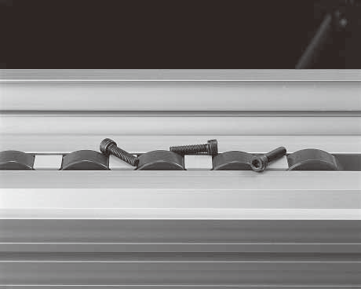

DOUBLE PITCH CHAIN
센터커버 체인
Center Cover Chain

체인 연결부에 커버를 부착해 볼트·너트 등 이물질 유입을 사전에 막는 체인입니다. 체인 속도와 이송물 속도가 1:1인 등속 체인으로, 무게중심이 낮아 이송물을 안정적으로 옮길 수 있습니다.
용도에 따라 부품 코팅과 다양한 변형이 가능합니다.
- 연결부 커버로 이물질 유입 방지
- 롤러 재질 선택 (Steel / Plastic)
- 용도별 부품 코팅 · 변형 대응
표에 없는 형번·특수 사양도 제작 가능합니다. 사용 환경과 형번을 알려주시면 적합한 제품을 확인해 드립니다.
상세 규격
치수 · 규격표
출처: 한국체인공업 / 제조사 자료. 실제 적용 규격은 형번과 사용 조건에 따라 달라질 수 있으니 문의 시 확인해 드립니다.
| 구분 | 해설 | 비고 | |
|---|---|---|---|
| VR | 무배속 체인 | VR-TP : 2L 간격 롤러 적용 Out Side 롤러(자기윤활소재) | 도금 유무 |
| VR-SC : 1L 간격 롤러 적용 | |||
| CR | 배속 체인 | CR-CP : 2L 간격 롤러 적용 | 도금 유무 |
| CR-SC : 1L 간격 롤러 적용 | |||
| RNL (VR/CR) | 무급유 무배속 체인 무급유 배속 체인 | RNL-VR : 2L 간격 롤러 적용 | 도금 유무 |
| RNL-CR : 1L 간격 롤러 적용 | |||
치수(pitch)
| 체인번호 | P | R | R1 | W1 | W2 | t | T | H | L1 | L2 | 최 대 허용장력 (kgf) | 로 울 러 부하하중(kgf/m) | 체 인 권장속도(m/mm) | 개 략 중 량(kgf/m) |
|---|---|---|---|---|---|---|---|---|---|---|---|---|---|---|
| 2040 VR(CR) | 25.4 | 15.88 | 24.6 | 10.0 | 5.5 | 2.0 | 1.5 | 12.0 | 15.7 | 17.5 | 160 | 120 | 20 | 2.5 |
| 2060 VR(CR) | 38.1 | 22.1 | 36.0 | 15.0 | 8.1 | 3.2 | 3.2 | 18.1 | 24.2 | 26.2 | 380 | 400 | 20 | 4.4 |
| 2060 VR(CR)-TP | 38.1 | 22.1 | 36.0 | 15.0 | 8.1 | 3.2 | 3.2 | 18.1 | 24.2 | 26.2 | 380 | 200 | 20 | 3.5 |
| 2080 VR(CR) | 50.8 | 28.58 | 48.0 | 20.0 | 14.7 | 4.0 | 4.0 | 22.7 | 35.6 | 38.8 | 540 | 600 | 20 | 7.3 |
| 2080 VR(CR)-TP | 50.8 | 28.58 | 48.0 | 20.0 | 14.7 | 4.0 | 4.0 | 22.7 | 35.6 | 38.8 | 540 | 400 | 20 | 6 |
체인 선정 기준
| 구분 | 해설 | 비고 | |
|---|---|---|---|
| VR | 무배속 체인 | VR-TP : 2L 간격 롤러 적용 Out Side 롤러(자기윤활소재) | 도금 유무 |
| VR-SC : 1L 간격 롤러 적용 | |||
| CR | 배속 체인 | CR-CP : 2L 간격 롤러 적용 | 도금 유무 |
| CR-SC : 1L 간격 롤러 적용 | |||
| RNL (VR/CR) | 무급유 무배속 체인 무급유 배속 체인 | RNL-VR : 2L 간격 롤러 적용 | 도금 유무 |
| RNL-CR : 1L 간격 롤러 적용 | |||
필요한 사양이 확실하지 않아도 괜찮습니다.
사용 환경과 조건을 알려주시면 적합한 제품을 제안해 드립니다.